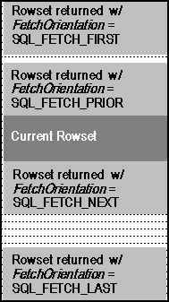
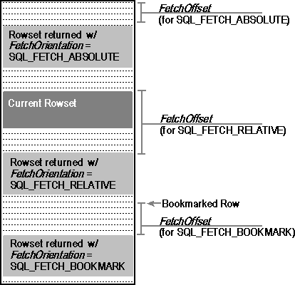

When using a scrollable cursor, applications call SQLFetchScroll to position the cursor and fetch rows. SQLFetchScroll supports relative scrolling (next, prior, and relative n rows), absolute scrolling (first, last, and row n), and positioning by bookmark. The FetchOrientation and FetchOffset arguments in SQLFetchScroll specify which rowset to fetch, as shown in the following diagrams.

Fetching next, prior, first, and last rowsets

Fetching absolute, relative, and bookmarked rowsets
SQLFetchScroll positions the cursor to the specified row and returns the rows in the rowset starting with that row. If the specified rowset overlaps the end of the result set, a partial rowset is returned. If the specified rowset overlaps the start of the result set, the first rowset in the result set is usually returned; for complete details, see the SQLFetchScroll function description.
In some cases, the application may want to position the cursor without retrieving any data. For example, it might want to test whether a row exists or just get the bookmark for the row without bringing other data across the network. To do this, it sets the SQL_ATTR_RETRIEVE_DATA statement attribute to SQL_RD_OFF. Note that the variable bound to the bookmark column (if any) is always updated, regardless of the setting of this statement attribute.
After the rowset has been retrieved, the application can call SQLSetPos to position to a particular row in the rowset or refresh rows in the rowset. For more information on using SQLSetPos, see “Updating Data with SQLSetPos” in Chapter 12, “Updating Data.”
Note Scrolling is supported in ODBC 2.x drivers by SQLExtendedFetch. For more information, see “Block Cursors, Scrollable Cursors, and Backward Compatibility” in Appendix G, “Driver Guidelines for Backward Compatibility.”